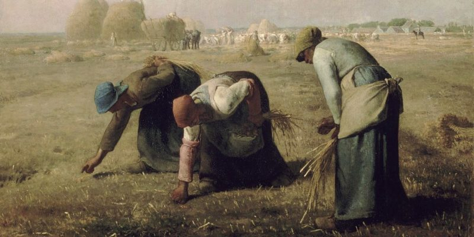
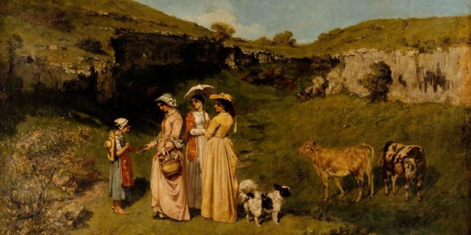

LITERATURA DEL REALISMO

LLITERATURA DEL REALISMO

fue un poeta y ensayista español del siglo XIX. Nació en la localidad de Cabra, en la provincia de Córdoba, en 1834 y falleció en Madrid en 1903. Su poesía se caracteriza por un estilo lírico y temas que incluyen el amor, la naturaleza y la patria. Algunos de sus poemas más famosos son "Canción del olvido", "Noche" y "Abrazo". Además de su carrera literaria, Núñez de Arce desempeñó un papel importante en la política y la sociedad españolas de su tiempo. Fue un defensor de la libertad y la justicia social y participó activamente en la batalla del General Prim.
"Pájaro y pajarero", de Henrik Ibsen (Noruega, 1828-1906) ¡Cruel pillete! Con ramaje de mimbrera tramé el lazo en un instante...; hasta diez no tuve contado, cuando un tierno pajarillo en mis manos prisionero aleteaba... Y con pérfida alegría, encerrado en una jaula, a mi cuarto lo conduje, y gocé aterrorizando a mi cautivo con miradas furibundas y con jestos de amenaza... Cuando el juego ya dejó de divertirme, satisfechas mis feroces crueldades, a la jaula coloqué sobre la mesa para abrir con precaución su puertecilla... ¡Con qué májica viveza de sus alas hace uso aquel pájaro enjaulado a quien se ofrece libertad y alegre vida! Raudamente hacia la luz dirije el vuelo, pero cae tras el choque con los vidrios... ¡Pobre pájaro cautivo; ahora quedas bien vengado! que es ahora el cazador quien prisionero, encerrado está en la jaula; en la jaula donde en vano poseído de terror se ajita triste... ¡Ay! También una mirada furibunda en él se fija, tras la reja de su cárcel; y ese ojo pavoroso le da miedo y le hace estremecerse de temores y de espanto... Y si el mísero imajina que la cárcel está abierta, tras la dulce libertad se precipita, mas, sus alas lo conducen a estrellarse con los vidrios...
EL REO DE MUERTE ¡Oh, vedle; vedle! ¡Turbia y ardiente la mirada, en brazos de su culpa que le acrimina austera, tan lejos y tan cerca de la insondable nada, del mundo que le arroja, del polvo que le espera!… ¡Luchando con extrañas y horribles agonías que traen ante sus ojos en rápida carrera sus inocentes horas, sus conturbados días, el cuadro pavoroso de su existencia entera! Ayer, aunque entre sombras, lo porvenir incierto, brindábale ilusiones de amor y de ventura, y hoy, asomado al borde de su sepulcro abierto, contempla horripilado la eternidad obscura. La muerte, que le acosa con misterioso grito, despierta los terrores de su conciencia impura: quiere llamar, y apaga sus voces el delito, quiere huir, y le asalta la hambrienta sepultura. ¡Ay, si recuerda entonces el dulce hogar sereno donde pasó ignorada su infancia soñadora, la amante y pobre madre que le llevó en su seno, único ser acaso que le disculpa y llora! ¡Ay triste de él si al lado del hondo precipicio su amparo no le presta la fe consoladora; la fe que se levanta potente en el suplicio y da sus alas de ángel al alma pecadora! ¡Miradle! Cada paso que hacia el cadalso avanza de su agitada vida los horizontes cierra: apágase en sus ojos la luz de la esperanza y el peso de la muerte fatídico le aterra. ¡Ay, ten valor! Si un día de imprevisión y dolo te puso con los hombres y con la ley en guerra, mañana entre los muertos abandonado y solo en su profundo olvido te envolverá la tierra. Aparta tu mirada terrífica y sombría de esa apiñada turba que bulle en el camino para gozar del triste placer de tu agonía y presenciar el término de tu fatal destino. ¡Oh! no la empuja sólo su imbécil sentimiento hacia el cadalso infame que espera al asesino. ¡Hasta la cumbre misma del Gólgota sangriento siguió también los pasos del Redentor divino!